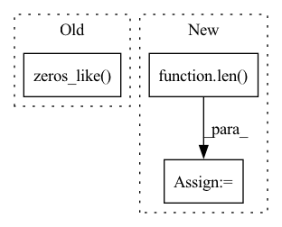

Pattern ID :7617

Before Change
truths = truths.cpu().detach()
preds_inds = torch.argmax(preds, dim=-1)
preds = torch.zeros_like(preds)
for i in range(total):
preds[i, preds_inds[i]] = 1
After Change
// zsl: 0.5 0.5 0.3
th = [0.5, 0.55, 0.55, 0.95]
for i in range(len(th)):
pred = preds[:, i]
pred[pred > th[i]] = 1
pred[pred <= th[i]] = 0
preds[:, i] = pred
// preds[0][preds[0] > 0.7] = 1
// preds[0][preds[0] <= 0.7] = 0
// preds[1][preds[1] > 0.5] = 1
// preds[1][preds[1] <= 0.5] = 0
// preds[2][preds[2] > 0.5] = 1
// preds[2][preds[2] <= 0.5] = 0
// preds[3][preds[3] > 0.5] = 1
// preds[3][preds[3] <= 0.5] = 0
// preds_inds = torch.argmax(preds, dim=-1)
// preds = torch.zeros_like(preds)
// for i in range(total):
// preds[i, preds_inds[i]] = 1
// print(preds)
// print(truths)
// truths = truths.to(torch.int32)
accs = []
f1s = []
for i in range(num_emo):
pred_i = preds[:, i]
truth_i = truths[:, i]
// acc = torch.sum(pred_i == truth_i).item() / total
acc = weighted_acc(pred_i, truth_i, True)
acc = accuracy_score(truth_i, pred_i)
f1 = f1_score(truth_i, pred_i, average="weighted")
In pattern: SUPERPATTERN
Frequency: 4
Non-data size: 3
Instances
Fragment ID: 25301184
Project Name: wenliangdai/modality-transferable-mer
Commit Name: e87e05acc2a55e7f84b52c7418bce20a139a6604
Time: 2020-06-20
Author: wenliang.dai.1995@gmail.com
File Name: src/evaluate.py
M Class Name: AnonimousClass
N Class Name: AnonimousClass
M Method Name: eval_iemocap(2)
N Method Name: eval_iemocap(2)
M Parent Class:
N Parent Class:
M File Name: src/evaluate.py
N File Name: src/evaluate.py
M Start Line: 155
M End Line: 165
N Start Line: 159
N End Line: 214
'>
Before Change
def forward(self, inp: torch.Tensor) -> torch.Tensor:
inp0, inp1 = inp.chunk(2, self.split_dim)
zeros = torch.zeros_like(inp0)
return torch.cat(replace_grad(*self.stem((inp0, zeros, inp1, zeros))), dim=self.split_dim)
After Change
def forward(self, inp: torch.Tensor) -> torch.Tensor:
self.x0, self.x1 = inp.chunk(2, self.split_dim)
for self.idx in range(len(self.module_list)):
self.mod_idx = self.idx % len(self.coupling_forward)
self.counter = 0
self.storage = {}
x0, x1 = self.x0, self.x1
with torch.autograd.graph.saved_tensors_hooks(self.pack, self.unpack):
'>
Fragment ID: 25301194
Project Name: homebrewnlp/revlib
Commit Name: cf30076bdb714b10ae99eb3cfcb7ff02f3aff974
Time: 2021-08-22
Author: 39779310+ClashLuke@users.noreply.github.com
File Name: revlib/__init__.py
M Class Name: ReversibleSequential
N Class Name: ReversibleSequential
M Method Name: forward(2)
N Method Name: forward(2)
M Parent Class: torch.nn.Module
N Parent Class: torch.nn.Module
M File Name: revlib/__init__.py
N File Name: revlib/__init__.py
M Start Line: 92
M End Line: 94
N Start Line: 72
N End Line: 83
'>
Before Change
target_imgs, _ = self.model.get_data(next(iter(self.target_loader)))
source_imgs, _ = self.model.get_data(next(iter(self.source_loader)))
source_imgs = self.add_mark(source_imgs)
noise = torch.zeros_like(target_imgs)
source_feats = self.model.get_layer(source_imgs, layer_output=self.preprocess_layer).detach()
// -----------------------------Poison Frog--------------------------------- //
print("poison frog attack")
After Change
source_feats = self.model.get_layer(source_imgs, layer_output=self.preprocess_layer).detach()
target_imgs, _ = self.model.get_data(next(iter(self.target_loader)))
target_imgs = target_imgs[:len(source_imgs)]
// -----------------------------Poison Frog--------------------------------- //
def loss_func(poison_imgs):
'>
Fragment ID: 25301193
Project Name: ain-soph/trojanzoo
Commit Name: ba7a05c0e1d8e0b546a7c0e7c168b1e57ccc0eba
Time: 2020-09-23
Author: ain-soph@live.com
File Name: trojanzoo/attack/backdoor/hidden_trigger.py
M Class Name: Hidden_Trigger
N Class Name: Hidden_Trigger
M Method Name: generate_poisoned_data(2)
N Method Name: generate_poisoned_data(1)
M Parent Class: BadNet
N Parent Class: BadNet
M File Name: trojanzoo/attack/backdoor/hidden_trigger.py
N File Name: trojanzoo/attack/backdoor/hidden_trigger.py
M Start Line: 106
M End Line: 136
N Start Line: 92
N End Line: 124